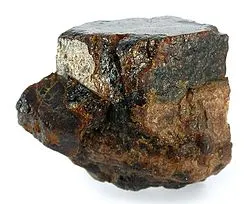

Mineral Grimoire
 Bastnasite
Bastnasite
Colour: Yellow, brown
Appearance: Vitreous to greasy flat translucent crystal
Rarity: Rare
Source: Sweden, Pakistan, Madagascar, France, United States
Attributes
A high vibration stone, Bastnasite powerfully stimulates the base and sacral chakras, activating your creativity and ability to manifest your dreams and plans. It helps you to recognize what is beneficial for your long term soul growth and to release unrealistic goals or expectations that get in the way of expressing your true self.
This stone facilitates releasing fear of the unknown. It acts as a catalyst for change enabling you to feel and express emotions without being overwhelmed by them and helping you to become less sensitive to the things that have previously caused upset. This stone may assist in stabilizing bi-polar disorder and personality or anxiety disorders, addictions and eating disorders by revealing underlying causes.
Bastnasite is beneficial for all dis-eases that arise out of blockages in the base or sacral chakras. These dis-eases are typically low level or flare up suddenly, or are toxic and psychosomatic. Placing Bastnasite over the blocked chakra regularly for several weeks cleanses the chakra, opening the way for the dis-ease to rectify.
Healing
Bastnasite reputedly is beneficial for stiffness in joints, chronic back pain, renal, reproductive or rectal disorders; fluid retention, irritable bowel and constipation or diarrhoea. Supporting detoxification of the lymph or liver, it may assist varicose veins or hernias, glandular disturbances, auto-immune diseases, PMT and muscle cramps, reproductive blockages or diseases such as impotence and infertility. Bastnasite is said to be helpful for allergies, diabetes, urinary infections, liver or intestinal dysfunction.
Position
Place over the abdomen or disperse as gem essence, especially the base and sacral chakras.